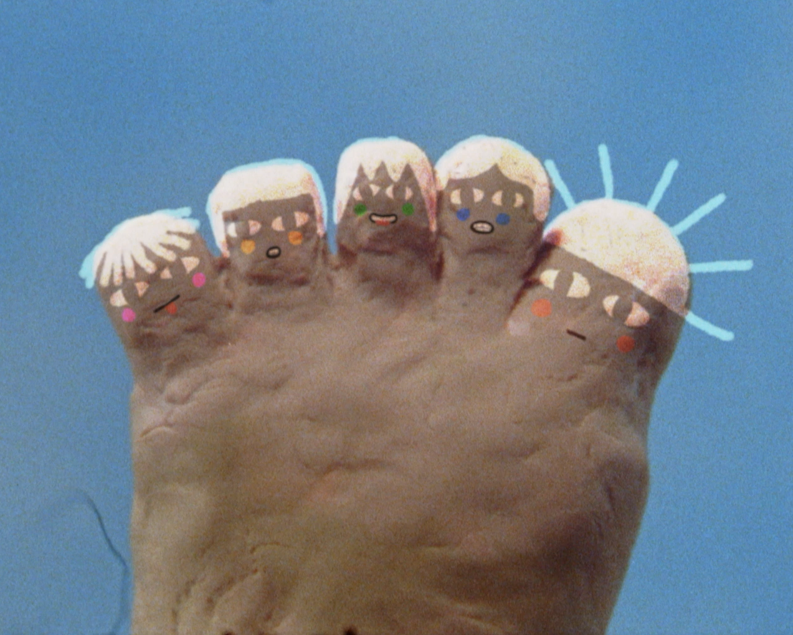

Passo Dopo Passo
"To us Passo dopo Passo is a playful song meant to feel 'more human' in the big city. It's like a mystical walk moved by dreams and imagination, that tries to look beyond the stress and distractions of every day and feel united."
Lyrics:
Che chiasso
Passo dopo passo
Qui la gente non ti ascolta
o non ti ascolta più
Distratto
Passo dopo passo
Vivere pensando
che ci sia qualcosa in più
Lo spazio
Passo dopo passo
Non c'è se ti lamenti
la gente non ti vuole più
Che spasso
Passo dopo passo
Vivere pensando
che ci sia qualcosa in più

a Delicavision & Agenzia Simpatia production
Directed and animated by Bianca Girardi and Ian Cibic
Starring Bruno Meneghello
Set Design by Bianca Girardi, Linda Pinton and Giulia Vettorel
Cameraman Lorenzo Marzi
DOP Nicola Cattelan
Color Nicolò Bassetto
Lights Davide Toaldo
Dedicated to BOBO
Storyboard for Passo Dopo Passo